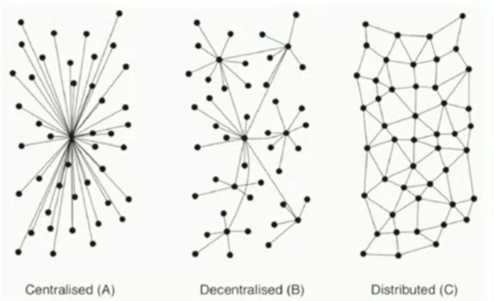

Website: Decentralized Finance (DeFi)
Book: DeFi and the Future of Finance
History #
Barter is the first DeFi: peer-to-peer, but very inefficient because of matching problem.
Purpose of money:
- Unit of account
- Medium of exchange **
- Store of value
- Transfer of value
2008: Bitcoin
2021: Blockchain
Assume that all major financial institutions around the world are looking at the potential of tokenization, stablecoins and frictionless payments. – David Solomon, CEO Goldman Sachs
It is possible that money to have value even the currency isn’t necessarily backed by anything (Iraqi Swiss dinar is an example)
Intangible value of money is important for crypto space in general.
DeFi:
- Enables peer to peer transactions without a centralized instituition
- Tokenization -> efficient barter mechanism
Problems of CeFi #
- Centralized control
- Limited access: unbanked / underbanked
- Inefficiency: 3% retail paid, 5-7% wire transfer, 2 days settlement time for stock transaction
- Lack of interoperability: Plaid, but blocked by regulators
- Opacity: need to rely on regulations
- Inequality of opportunities
Origin of DeFi #
Origin of DeFi: “dark pool” trading, 1979
- 1991 Haber and Stornetta: Blockchain
- 2002: Initiated by the idea of requiring email sender to do a computational task before sending email to eliminate junk mail. Though low cost for one, high cost for millions
- 2008: Satoshi Nakamoto
Raised blockchain and proof-of-work. PoW ensures that the ledger could not be edited unless extreme computing power was available.
Crypto
- eliminates the problem of double-spending
- every transaction kept in immutable ledger
- cryptographic scarcity: 21 million bitcoins
- user sovereignty
- portability
Ethereum: uses smart contract
dApps: no centralized, network effects
Proof-of-Work is a consensus mechanism of Bitcoin, used to solve “double spending” problem.
DeFi Foundations #
Blockchain #
Trust is within technology, not different parties – very different from CeFi.
Blockchain is a special ledger
- distributed

Every 10 min, Bitcoin broke into blocks and check the fingerprint of the connection part of each block. It won’t match if one is broken.
Last line (hash) is repeated as the first line in the next block. -> chain
Altering any data in block 1 means the last line will change and will not match the first line in block 2.
Hashing
Hashing is a one-way function
Ethereum blockchain uses Keccak-256
Miners add some data called nonce (number only once) to find a hash that get lots of leading zeros. It makes it difficult for adversary to change a block then change the future blocks to make everything works. Miners give blockchain unprecedented security.
An attacker needs to amass 51% of the network power (boundary of PoW security)
Cryptocurrency
It is a digital token.
- asymmetric key cryptography
private key & public key: like ssh
Users of smart contracts need to pay a fee called gas.
Ethereum is turing complete -> 1. if 2. for loop 3. store data
In the context of smart contract platforms, an oracle is any data source for reporting information external to the blockchain.
Mining is asscocated with both strength (security) and weakness (costly).
Reasons of cryptos being volatility: no tangible value, bad liquidity
Problems DeFi Solved #
Risk #
DeFi closes the counterparty risk, and introduces a new class of risks.
Smart contract risk #
The key component in DeFi is a smart contract. If there are issues with that smart contract, then that opens the door to an exploit.
The software foundation gives attackers a large attack surface. Public blockchains are open systems, so if there’s any flaw in the code, it’s going to be exploited. This won’t be a problem in CeFi because people cannot enter the private website. This new attack vector is termed smart contract risk.
Audit
You develop your smart contract, you want to make sure there’s no mistake. So companies will employ a third party auditor to go through and stress test the smart contract. Sometimes you’ll employ two auditors.